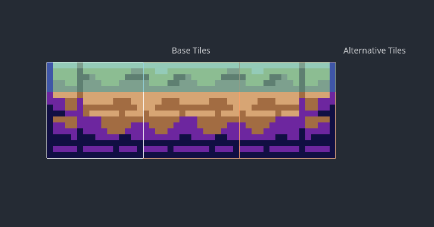

So I just finished this jam game, No Reservations, with the very skilled HumanIsRed behind all the art. Go give him a follow! Also on twitter!!
A requirement of the jam is that all entrants submit a devlog, in hopes that we can all learn from each other. Here I'll run through what's been on my mind while developing the game, things I think could be helpful, and how I dealt with certain challenges. Starting off...
GDScript 2.0 Rules
And I can't go back. For a while now, I've been using Godot 4.0 - even building the master branch before alpha builds became available. First off - I really, really don't recommend using 4.0 for developing anything serious yet. Even for a week-long jam, it surprised me with bugs, features that were poorly implemented if at all, general performance problems I couldn't pin down (although you can blame my code for this one), and frequent editor crashes. If you have any self control, try the new stuff, and then put it away for now. Don't be like me.
I can't help myself. New GDScript is so nice. It's also faster to write. To keep it succinct, I'll focus on the most important changes (to me). The first two are that functions and signals can now be treated as any other object. We already know that first-class functions are nice, but first-class signals are another secret killer. In Godot 3, if you wanted to connect a timer to a function, this is how you'd write it:
extends Node
func _ready():
timer.connect("timeout", self, "some_function")
func some_function():
# do stuff ...
In 4.0, you eliminate the need for wanton string use by changing that line to this:
timer.timeout.connect(some_function)
Isn't that nice? No strings! Both the signal and the function are referred to directly. Now you can catch typos before they muck everything up during runtime.
But maybe that's not a big deal to you. Ok, no strings, big deal. But you wanna write less code! Okay. What if that function just changes a variable, and doesn't call anything else?
extends Node
foo = false
func _ready():
timer.connect("timeout", self, "some_function")
func some_function():
foo = true
That's a lot of code for just flipping a switch, right? You have a game jam to finish. Well, now 4.0 allows you to easily do weird and hacky things like this:
extends Node
foo = false
func _ready():
timer.timeout.connect(set.bind("foo", true))
Since set is a method in every Object, we can take advantage of that by just connecting and binding it directly. We've totally eliminated the need for that second function.
...Okay, we've also reintroduced reflection with strings, but if your primary concern is development time (as was mine), this is a huge W. This also allows for currying. Along with the new lambda functions, GDScript can be very flexible in its expression (though still not as much as Python).
Here's some more intuitive stuff with first-class functions, which I used in my custom (cpu bound) particle FX code. Essentially, a number of particles are animated to shoot outwards in a direction, with different amounts of random spread and length for different kinds of animation - a user defined narrow spread, a wide spread, and full-circle. Which kind is chosen is random, again with user-defined weights for each. To do this, I randomly select from 3 instances of the constructor function directly, each bound with different parameters based on the kind of animation chosen, matched with an array of weights created from the user defined variables exported earlier.
It looks like this:
...
func animate_particle():
var line: LineParticle
var straight: Callable = _particle.bind(spread1, size1)
var wide: Callable = _particle.bind(spread2, size2)
var full_circle: Callable = _particle.bind(360, size3)
var funcs: Array[Callable] = [straight, wide, full_circle]
var weights: Array[float] = [straight_w, wide_w, full_circle_w]
line = rng.weighted_choice(funcs, weights).call()
...
In fact, even that weighted_choice function uses first-class functions under the hood, in my own RandomNumberGenerator-derived class:
func weighted_randi_range(start: int, end: int, weight_function: Callable) -> int:
var weight_sum = 0.0
var weights = []
for i in range(start, end):
var weight: int = weight_function.call(i)
weights.append(weight)
weight_sum += weight
var rnd = randf_range(0, weight_sum)
for i in range(start, end):
var weight = weights[start + i]
if rnd <= weight:
return i
rnd -= weight
assert(false, "should never get here")
return 0
func weighted_choice(array: Array, weight_array: Array):
return function_weighted_choice(array, func(i): return weight_array[i])
func function_weighted_choice(array: Array, weight_function: Callable):
return array[weighted_randi_range(0, array.size(), weight_function)]
This probably isn't the fastest way of doing things, but I think it works well as a generic & re-usable way to weigh random number generation for whatever your purpose is.
Now for the bad stuff...
Godot 4.0 is DEFINITELY STILL ALPHA
A new change in the vast Godot 4.0 features list is a promising rewrite of the navigation system. Now it's server-based, much like rendering, physics, etc. I hoped to take advantage of this, as I had used their navigation system for my game, Super Misfire or: One Gun to Shoot Them All, to good effect, and it was relatively easy to implement. Unfortunately, in Godot 4.0 alpha 8 (which is the version I am currently using for No Reservations), it seems like a major component of the navigation system simply does not work: the NavigationObstacle2D. Unfortunately for me, my game has tables.
Let me explain.
Here are some tables in my game:
You can shoot over these tables, but they block movement. An explosion will destroy them, clearing the path. They're physics objects, so a smaller explosion that doesn't destroy them will move them a little bit. In early iterations of this project, enemies would frequently get stuck on tables, as their pathfinding didn't see them. You see, all the pathfinding information was added by hand, by me, as baking it into the tilemap just wouldn't cut it.
Godot 4.0 has a convenient node called NavigationObstacle2D. Its purpose is to be attached to a dynamic object, informing navigation agents that they must move around it. This was express-made for my purpose, so I used it.
Except, it didn't do anything. Enemies didn't avoid the obstacles. No amount of tweaking navigation settings helped at all. So I had to come up with a backup solution short of making a different game entirely. What could I do? Well, I went with the obvious solution: exclude the area around tables from the navigation regions.
I went back and did this for nearly every table in the game.

To allow enemies to cross paths where tables used to exist, when a table is destroyed, it then added & enabled a new navigation region to the map. Of course, this didn't account for when a table still exists but has been moved by some force. In fact, it still doesn't. And I don't know how or if I am going to solve that, outside of simply waiting for them to fix the feature.
Hand-drawing the navigation polygons had already taken up about a third of the time spent designing levels, and doing it AGAIN probably bumped that up to half. What an enormous waste of time! It's also a big reason why there are only 3 levels.
Moving onto another annoying thing.
First off, Godot's new TileMap feature is quite nice. The new terrains system allows for easily making auto-tiles between different types of tiles, all the new features for editing tile properties are extremely useful, if not a bit clunky to use. But there's one problem that made it an utter slog to use; it seems that you cannot define a "template" for autotiling terrain. That means, for every single terrain type, you have to paint it manually. Here is what that looks like, in real time:
Rinse and repeat. Granted, I am going quite fast here; at first, this would take me even longer, as I was not totally sure which tile was supposed to be what, and I had not got used to the weird UI. No eraser button? Really? To add icing to the cake, you couldn't copy physics polygon templates either. For this tileset it doesn't matter, as they all use the whole tile, but for something like the "walls" underneath these tiles, I had to make sure I manually set each one to be the same size:

There's no way to copy and paste them either! I had to manually draw a new polygon each time I had reset the brush to something else, and then compare it visually with the others. Why???
Oh yeah, there's also memory leaks like crazy.
Sorry if you played my game for too long and your pc crashed. It's hardly my fault; Godot 4.0 games constantly leak memory. In my recent experience, it leaks whenever you create a tween, whenever you use await, and so on. I'm not the only one with this problem.
Lastly, I think it's time to accept a problem with my own self.
My code is slow
I suck at writing fast code. When I write code, I usually optimize for "amount of time writing code" or "amount of time I will have to spend writing code, later". Because I don't really like to write code. But this is starting to bite me in the ass; GDScript is just kinda slow. There's no getting around that. I can't afford to be lazy.
Here's an example of some "nice but slow" code I wrote for this jam.
Every character in the game has a "brain", or something that generates inputs for the character to respond to. Below is that class:
extends Node2D
class_name InputBrain
var previous_state := InputState.new()
var input_state := InputState.new()
var host
func _enter_tree():
host = get_parent()
func get_input():
input_state = InputState.new()
input_state.get_previous(previous_state)
process_input()
previous_state = input_state
return input_state
func process_input():
pass
Function get_input is usually called every frame, unless the character is inactive or dead. Not so bad, right? Let's look inside the InputState class to see what's going on there.
class_name InputState
var input_map := {}
var prev_input_map := {}
var inputs:
get:
return input_map.values()
var prev_inputs:
get:
return prev_input_map.values()
func _init():
# edit this for your game
add_input(AxisInput2D.new("MoveDir"))
add_input(AxisInput2D.new("AimDir"))
add_input(ButtonInput.new("Primary"))
add_input(ButtonInput.new("Secondary"))
func duplicate():
var state = InputState.new()
for input in inputs:
state.add_input(input.duplicate())
func is_active():
for input in inputs:
if input.is_active():
return true
return false
func set_previous(state: InputState):
for input in state.input_map:
prev_input_map[input] = state.input_map[input].duplicate()
func add_input(input: BaseInput):
input_map[input.name] = input
if prev_input_map.has(input.name):
input.prev = prev_input_map[input.name].duplicate()
func apply_map(state: InputState):
var map = state.input_map
for key in map:
if !input_map.has(key) or map[key].is_active():
add_input(map[key])
func read(name) -> BaseInput:
if input_map.has(name):
return input_map[name]
return null
func printable():
var dict = {}
for key in input_map:
dict[key] = input_map[key].print()
return dict
Okay, this is getting interesting. There is no code specific to my game here, other than in _init. You can see what inputs were made this tick, as well as the previous - something useful to any game with more than trivial input schemes. Look at all these dictionaries, objects, duplications... all for a single frame of input for a single character! The duplication is my way of solving a really enormous and silly memory leak where every input had a reference to the previous input, which had a reference to the previous input, and so on... essentially forming a linked list backwards to the very first input that character made in the game. Since they're RefCounted (Reference in previous Godot versions), they were kept in memory as long as something else referenced them. Now they are duplicated and orphaned, meaning the garbage collector will take care of them normally.
What is that BaseInput class? Well, it looks like this:
class_name BaseInput
var name = "BaseInput"
var value = false
var _prev: BaseInput = null
var _get_prev_func = _get_prev_lazy
var prev: BaseInput:
get:
return _get_prev_func.call()
set(input):
_prev = input
var value_smashed:
get:
return _get_smashed()
var is_smashed:
get:
return _is_smashed()
func _init(name=StringName(""), value=null):
if name:
self.name = name
if value != null:
self.value = value
var time_held = 0
func _get_smashed():
return value and !prev.value
func _is_smashed():
return value_smashed
func _get_prev_lazy():
if _prev == null:
_prev = get_script().new()
_get_prev_func = (func(): return _prev)
return _prev
func is_active():
return value == true
func print():
return value
func clear():
value = false
func duplicate():
return get_script().new(name, value)
More clever hacks, right? Lazy evaluation to get the previous input, or generate one if it doesn't exist! Woah!! And a bunch of properties to get different info about the input without calculating it all beforehand. You can see that better demonstrated with this subtype, which represents a joystick or other directional input:
extends BaseInput
class_name AxisInput2D
func _init(name="", value=Vector2()):
assert(value is Vector2)
super._init(name, value)
h_dir = dir.x
v_dir = dir.y
func is_active():
return h_active or v_active
func _get_smashed():
return Vector2(h_dir_smashed, v_dir_smashed)
func _is_smashed():
return is_v_smashed or is_h_smashed
var dir:
get:
return value
var dir_smashed:
get:
return value_smashed
var _dir_normalized = null
var dir_normalized: Vector2:
get:
if _dir_normalized == null:
_dir_normalized = dir.normalized()
return _dir_normalized
var _angle = null
var angle: float:
get:
if _angle == null:
_angle = dir.angle()
return _angle
var _dir_smashed_normalized = null
var dir_smashed_normalized: Vector2:
get:
if _dir_smashed_normalized == null:
_dir_smashed_normalized = dir_smashed.normalized()
return _dir_smashed_normalized
var dir_sign: Vector2:
get:
return sign(dir)
var dir_sign_smashed: Vector2:
get:
return sign(dir_smashed)
var h_dir := 0.0
var v_dir := 0.0
var v_dir_smashed: float:
get:
return v_dir if v_dir != 0 and prev.v_dir == 0 else 0
var h_dir_smashed: float:
get:
return h_dir if h_dir != 0 and prev.h_dir == 0 else 0
var h_active: bool:
get:
return h_dir != 0
var v_active: bool:
get:
return v_dir != 0
var h_sign:
get:
return sign(h_dir)
var v_sign:
get:
return sign(v_dir)
var h_sign_smashed:
get:
return sign(h_dir_smashed)
var v_sign_smashed:
get:
return sign(v_dir_smashed)
var is_v_smashed:
get:
return v_dir_smashed != 0
var is_h_smashed:
get:
return h_dir_smashed != 0
Before you tell me: yes, I know I can just use Input.is_action_just_pressed(). Otherwise, isn't all this extra stuff so nice?? More lazy eval of things like the normalized direction, angle, etc. But, I guess these abstractions are not zero-cost with Godot. It's not huge, but there is definitely a noticeable impact on performance when things are done this way. Perhaps it's time to rewrite it in Rust... once they get it working with GDExtension, of course.
Anyway, this concludes my devlog. I hope to have helped you learn something here.